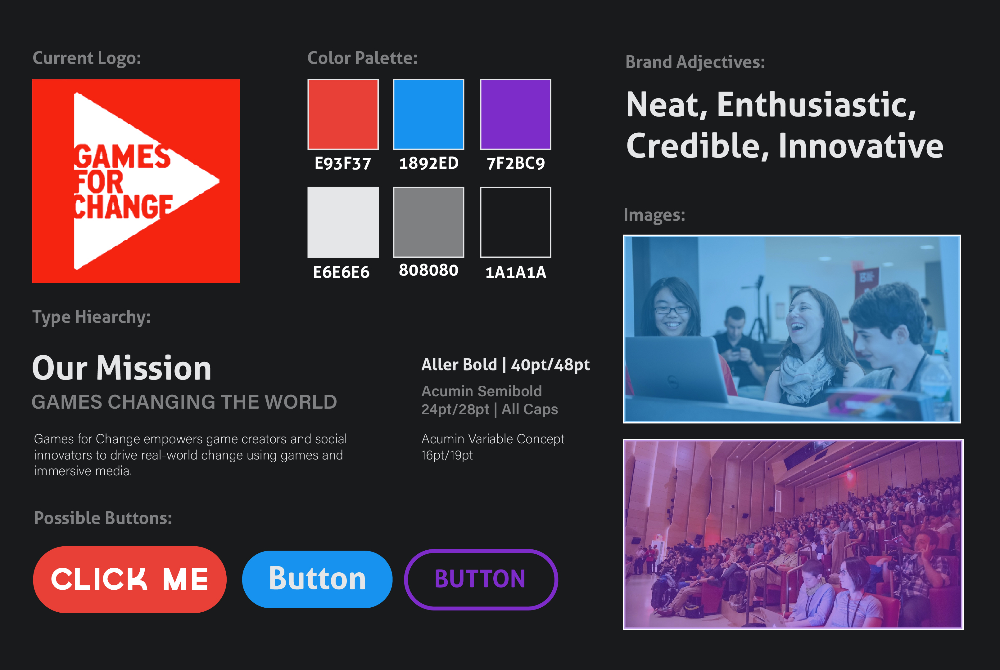

Style Tile
The style tile is a culmination of all existing design elements and directions based on previous research in order to give the client an organized visual sample of the design moving forward.

The style tile is a culmination of all existing design elements and directions based on previous research in order to give the client an organized visual sample of the design moving forward.